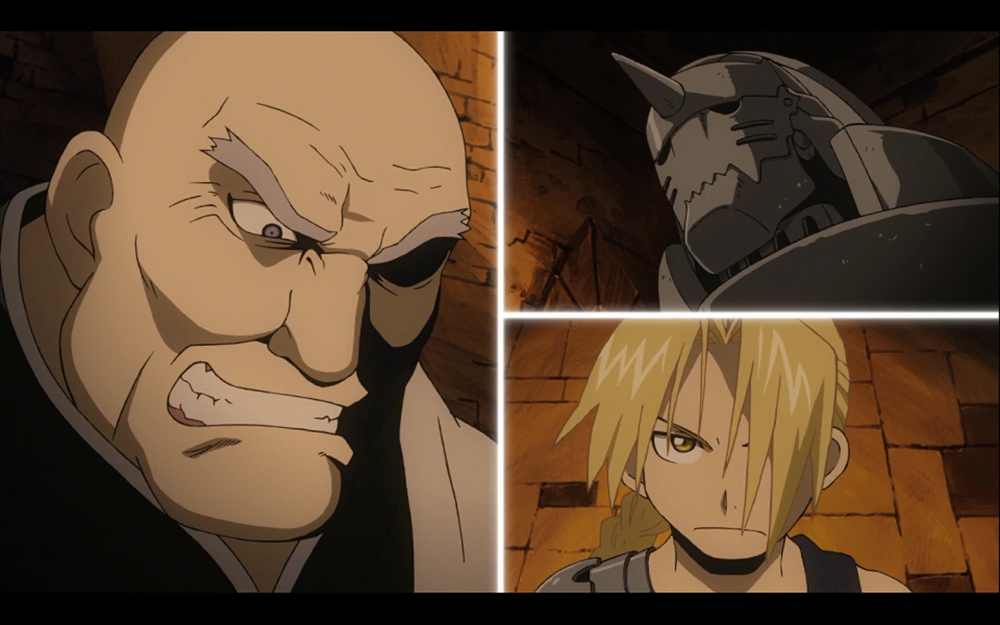
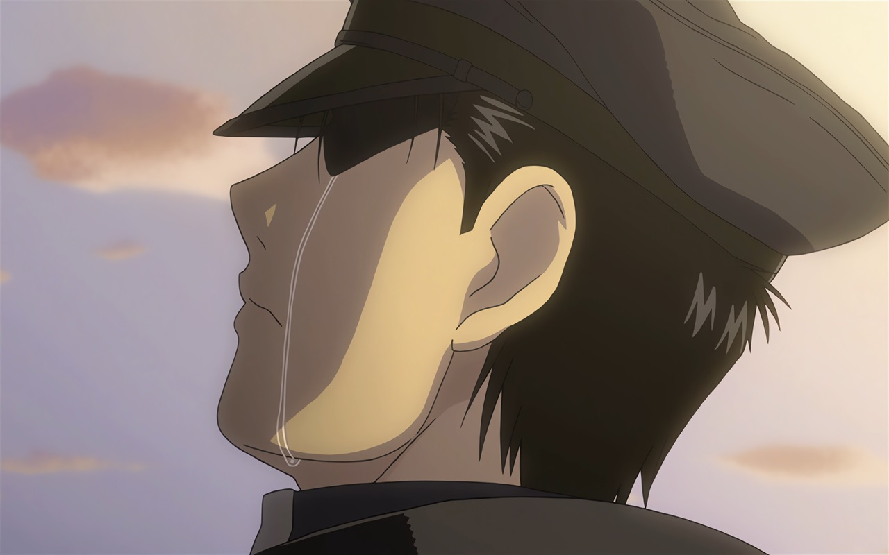

A Cidade da Heresia
Edward e Alphonse chegam a Lior, uma cidade dominada por uma figura religiosa chamada Cornello. Eles enfrentam Cornello, que usa alquimia para enganar as pessoas, e descobrem que ele é na verdade um homúnculo, dando início à batalha contra a corrupção.

Caminhos Distintos
Edward e Alphonse seguem em direções separadas em busca de pistas sobre a Pedra Filosofal. Enquanto Edward enfrenta desafios em sua jornada, Alphonse encontra um grupo de alquimistas que o ajudam a entender melhor o que aconteceu com seus corpos.
O fim da jornada
O episódio culmina na batalha final contra o líder homúnculo, Father. É uma resolução emocional para os irmãos Elric, que finalmente enfrentam as consequências de suas ações e descobrem a verdadeira natureza da alquimia e do sacrifício.